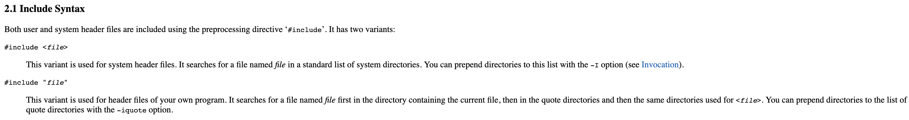
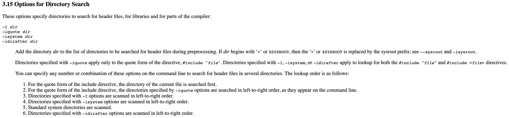
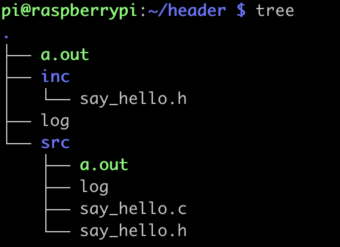
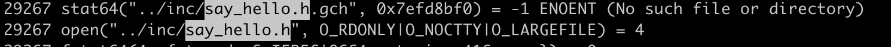
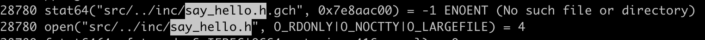

这两天被问到一个很有意思的问题：C头文件中尖括号与双引号有什么区别，以前只大约知道 <> 常用在系统库文件，"" 常用在自定义的借口文件中，那具体在gcc编译搜索过程中有啥区别，还得仔细查阅一番相关文档。
针对 <> 与 "" 的区别有如下解释：

摘抄自：https://gcc.gnu.org/onlinedocs/cpp/Include-Syntax.html#Include-Syntax
而在搜索时的区别，则做如下优先级排序：

摘抄自： https://gcc.gnu.org/onlinedocs/gcc/Directory-Options.html#Directory-Options
简单理解就是：
1. 尖括号告诉编译器去搜索标准系统目录，可使用 -I 选项添加其它搜索目录
2. 双引号告诉编译器先搜索以源文件路径为参考的目录，其次搜索引号目录，最后搜索标准系统目录， -iquote 选项可添加其它目录到引号目录列表中。
源文件路径为参考的目录
如何理解其含义呢，以实际情况为例，本地存在一个header/目录，其内部目录树结构如下所示：

图中的hello.c文件，是这样包含头文件的：#include "..inc/hello.h"
测试1. shell 处在 ～/header/src/ 目录，跟踪gcc 的编译搜索过程: strace -f -o log gcc say_hello.c ，查看log输出：

从图中的搜索路径可知：因源文件刚好处在gcc执行目录下，因此在编译时，源文件的相对执行目录为 . ， dot默认可省略，再拼接上#include "../inc/hello.h" 引号内的路径，那么gcc会定位到 "../inc/say_hello.h" 去搜索hello.h文件
测试2. shell处在 ～/header/ 目录，跟踪gcc的编译搜索过程：strace -f -o log gcc ../src/say_hello.c，查看log输出：

从图中搜索路径可知：因源文件在gcc目录的下一级目录，因此在编译时，源文件的相对执行目录为 src/ ， 再拼接上 #include "../inc/hello.h" 引号内的路径，那么gcc会定位到 "src/../inc/say_hello.h" 去搜索hello.h文件.
所以从测试结果来看，gcc编译时，以执行目录为参考点来定位源文件的路径，再以源文件为参考点来定位头文件路径。在上述测试中，~/header/src/say_hello.h 文件始终是被忽略的，除非代码中写成 #include "say_hello.h" 。